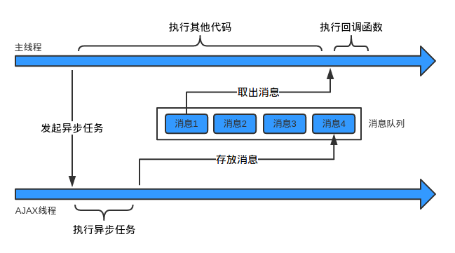

Everything runs in parallel except your code!
Nodejs入门笔记
诞生背景
Node.js，或者 Node，是一个可以让 JavaScript 运行在服务器端的平台。它可以让 JavaScript 脱离浏览器的束缚运行在一般的服务器环境下，就像运行 Python、Perl、PHP、Ruby 程序一样。你可以用 Node.js 轻松地进行服务器端应用开发，Python、Perl、PHP、Ruby 能做的事情 Node.js 几乎都能做。
Node.js 是一个为实时Web（Real-time Web）应用开发而诞生的平台，它从诞生之初就充分考虑了在实时响应、超大规模数据要求下架构的可扩展性。这使得它摒弃了传统平台依靠多线程来实现高并发的设计思路，而采用了单线程、异步式I/O、事件驱动式的程序设计模型。这些特性不仅带来了巨大的性能提升，还减少了多线程程序设计的复杂性，进而提高了开发效率。
Node.js定义
一个搭建在Chrome JavaScript运行时 上的平台，用于构建高速、可伸缩的网络程序。
Node.js采用的事件驱动、非阻塞I/O模型，使它 既轻量又高效，并成为构建运行在分布式设备上的数据密集型实时程序的完美选择。
Node.js模块构成

- core javascript API 实现高层级别的 Node.js API。
- bindings用于包装并暴露底层libuv和其他底层接口
- v8 是google开源javascript解释引擎。
- libuv 是 Node.js 非阻塞引擎。
Node.js是首个将异步作为主要编程方式和设计理念的平台，伴随着异步I/O的还有事件驱动和单线程，它们构成Node的基调。
异步I/O与事件驱动
Node.js 最大的特点就是采用异步式 I/O 与事件驱动的架构设计。
对于高并发的解决方案，传统的架构是多线程模型，也就是为每个业务逻辑提供一个系统线程，通过系统线程切换来弥补同步式 I/O 调用时的时间开销。
Node.js 使用的是单线程模型，对于所有 I/O 都采用异步式的请求方式，避免了频繁的上下文切换。
Node.js 在执行的过程中会维护一个事件队列，程序在执行时进入事件循环等待下一个事件到来，每个异步式 I/O 请求完成后会被推送到事件队列，等待程序进程进行处理。
同步和异步是指工作过程，阻塞和非阻塞是指表现形式；
同步导致阻塞线程，异步是非阻塞线程；
异步过程
主线程发起一个异步请求，相应的工作线程接收请求并告知主线程已收到(异步函数返回)；
主线程可以继续执行后面的代码，同时工作线程执行异步任务；
工作线程完成工作后，利用消息队列和事件循环通知主线程；
主线程收到通知后，执行一定的动作(调用回调函数)。
消息队列和事件循环
工作线程将消息放到消息队列，主线程通过事件循环过程去取消息。
消息队列：消息队列是一个先进先出的队列，它里面存放着各种消息。
事件循环：事件循环是指主线程重复从消息队列中取消息、执行的过程。
消息队列中的每条消息实际上都对应着一个事件。
生产者与消费者

从生产者与消费者的角度看，异步过程是这样的：
工作线程是生产者，主线程是消费者(只有一个消费者)。
工作线程执行异步任务，执行完成后把对应的回调函数封装成一条消息放到消息队列中；
主线程不断地从消息队列中取消息并执行，当消息队列空时主线程阻塞，直到消息队列再次非空。
同步和异步的示例
用一个生活中的例子总结一下同步和异步：
同步：在公路上，汽车一辆接一辆，有条不紊的运行。这时，有一辆车坏掉了。假如它停在原地进行修理，那么后面的车就会被堵住没法行驶，交通就乱套了。
异步：幸好旁边有应急车道，可以把故障车辆推到应急车道修理，而正常的车流不会受到任何影响。等车修好了，再从应急车道回到正常车道即可。唯一的影响就是，应急车道用多了，原来的车辆之间的顺序会有点乱。
这就是同步和异步的区别。同步可以保证顺序一致，但是容易导致阻塞；异步可以解决阻塞问题，但是会改变顺序性。改变顺序性其实也没有什么大不了的，只不过让程序变得稍微难理解了一些 :)
并行编程
- EventProxy
EventProxy 仅仅是一个很轻量的工具，但是能够带来一种事件式编程的思维变化。有几个特点：
- 利用事件机制解耦复杂业务逻辑
- 移除被广为诟病的深度callback嵌套问题
- 将串行等待变成并行等待，提升多异步协作场景下的执行效率
- 友好的Error handling
- 无平台依赖，适合前后端，能用于浏览器和Node.js
- 兼容CMD，AMD以及CommonJS模块环境
- Async
Async is a utility module which provides straight-forward, powerful functions for working with asynchronous JavaScript. Although originally designed for use with Node.js and installable via npm install —save async, it can also be used directly in the browser.
当你需要去多个源(一般是小于 10 个)汇总数据的时候，用 eventproxy 方便；
当你需要用到队列，需要控制并发数，或者你喜欢函数式编程思维时，使用 async；
大部分场景是前者。
单元测试
- 测试框架 mocha : http://mochajs.org/
- 断言库 should : https://github.com/tj/should.js
- 测试率覆盖工具 istanbul : https://github.com/gotwarlost/istanbul
- Makefile 的编写 : http://blog.csdn.net/haoel/article/details/2886
浏览器测试
- mocha 进行前端测试 : http://mochajs.org/
- 断言库 chai: http://chaijs.com/
- 配合express集成测试 supertest（superagent 的孪生库）：https://github.com/tj/supertest
- headless 浏览器 phantomjs: http://phantomjs.org/
其他库
- web框架：express
- html解析（类jquery）：cheerio
- 爬虫：superagent
- 辅助工具：utility
- 热部署工具：nodemon
- ORM：Sequelize